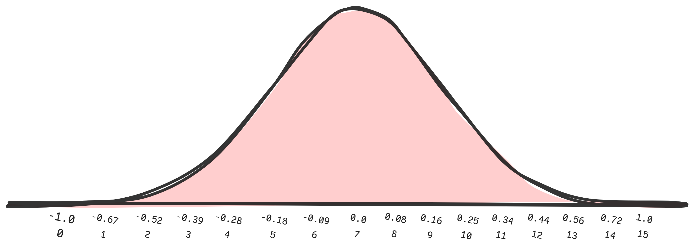
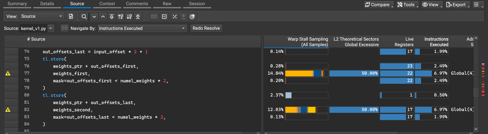
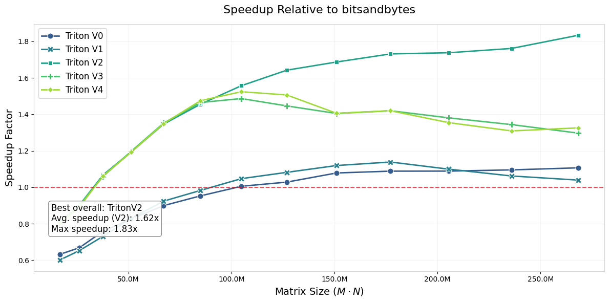

Unsloth has released a list of some challenging tasks related to PyTorch and parameter efficient fine-tuning. One of the challenges was writing a Triton kernel for dequantizing QLoRA NF4 quantized weights. I thought it would be a fun challenge on a technical level to go beyond tutorial-like kernels for softmax and matrix multiplications1.
1 if you actually have suggestions for kernels I would love to hear them.
2 Code can be found on GitHub which has all Triton kernels implemented and a benchmark notebook.
In this post2, I’ll walk through the process of converting CUDA code to Triton and share how I achieved performance improvements of up to 1.6X to 1.8X for LLaMA models ranging from 6B to 65B parameters. Notably, the speed gains from my implementation increase as model size scales up, making this approach particularly valuable for larger models — which is basically the intended use for QLoRA.
We start with discussing what QLoRA is and move on to the CUDA kernels that are typically launched by bitsandybtes, the library used for NF4 quantization in Unsloth and PEFT. From there, we mimic the CUDA kernels in Triton and benchmark its performance. We sort of know that the CUDA kernels can be fused in Triton and use this to our advantage to create a single fused kernel which turns out to be slower! After benchmarking with Nsight compute, we notice that memory coalescing is the offender and fix it in three distinct approaches that all outperform its CUDA counterpart.
Parameter Efficient Fine-Tuning & QLoRA
Fine tuning LLMs is prohibitively expensive for GPU poors. A back-of-the-napkin calculation for a 7B model in bf16 totals to 56GB for training, if we scale that to 33B we are at 264GBs. There really aren’t consumer-grade NVIDIA GPUs in this range (by design), so fine-tuning the entire model is a no-go for now.
Instead of fine-tuning the whole model, in parameter efficient fine-tuning we fine-tune either a subset of the weights or more typically add low-rank adapters (LoRA). Because LoRA adds weights and only trains these, the LLM itself can be reduced to it’s inference capabilities which saves a whole lot of memory - 7B goes from 56GB to 14GB and 33B from 264GB to 66GB. That provides enough wiggle room for us to fine-tune a 7B model practically for free on Google Colab & Kaggle on T4 notebooks.
If we are using the LLMs for inference-mode only with added weights, why not take it one step further and quantize the LLMs as small as possible? This is where QLoRA comes into play. QLoRA’s contribution is threefold:
- 4-bit NormalFloat (NF4), a new data type that is “information theoretically optimal for normally distributed weights”
- A double quantization to reduce the average memory footprint by quantizing the quantization constant
- A way to page optimizers to manage memory spikes
We are going to fully skip the last contribution and focus only the NF4 data type and what the double quantization is in depth.
The NormalFloat (NF4) Data Type
NF4 uses 4 bits as an index to a 16 element lookup table. Since there is no 4 bit data type in Torch, we have to pack and unpack 4 bits from a torch.uint8 type.
>>> packed = torch.zeros((), dtype=torch.uint8)
>>> packed # [0 0 0 0 | 0 0 0 0]
1>>> packed = packed + 5 # [0 0 0 0 | 0 1 0 1]
2>>> packed = (packed << 4) + 9 # [0 1 0 1 | 1 0 0 1]
3>>> first = (packed >> 4) & 0xF # [0 0 0 0 | 0 1 0 1] (5)
>>> second = packed & 0xF # [0 0 0 0 | 1 0 0 1] (9)- 1
-
We start with a
torch.uint8zeros singleton tensor and add a 5 to it. - 2
- We add another 4 bit value (9), but we have to shift the 4 least significant bits to make room.
- 3
-
To retrieve the packed values, we use a combination of masking (
0xF = [0 0 0 0 1 1 1 1]) and bit-shifting.
4 bits (or 16 elements) is not a lot to work with, so the authors of QLoRA take advantage of the following:
Since pretrained neural network weights usually have a zero-centered normal distribution with standard deviation σ (see Appendix F3), we can transform all weights to a single fixed distribution by scaling σ such that the distribution fits exactly into the range of our data type.
3 Appendix F leads to a proof in the form of a statistical test.
The resulting lookup table is a 16 element table of fp32 values4:
4 You can find the same in Appendix E.
nf4_code_table = torch.tensor([
-1.0,
-0.6961928009986877, -0.5250730514526367, -0.39491748809814453,
-0.28444138169288635, -0.18477343022823334, -0.09105003625154495,
1 0.0,
0.07958029955625534, 0.16093020141124725, 0.24611230194568634,
2 0.33791524171829224, 0.44070982933044434, 0.5626170039176941, 0.7229568362236023,
1.0,
], dtype=torch.float32)- 1
- The table has a true zero point and a maximum range of [-1, 1].
- 2
- There is one more positive value to ensure the zero point.
The elements here are carefully constructed to represent a Normal distribution (hence NormalFloat). The approach is straightforward: create quantiles of the Normal distribution based on the data type (\(k\)-bits, in our case \(k=4\)) and ensure there is a true zero point and that it is bounded by [-1, 1]:

Quantization & Dequantization
The weights are quantized in successive blocks of 64 ensuring a high precision (and accounting for outlier values). This means that successive 64 weights have the same absolute-maximum scaling factor5, which is stored in fp32. At this point we quantize “as usual” - find the closest code in the lookup table nf4_code_table to the weight and use the index of that code as the NF4 value that we pack. For this scale factor we will stick to the term absmax.
5 weight = quantized_weight × block_scale_factor, scale factor essentially normalizes to [-1, 1].
Dequantization is the easier part. From a packed torch.uint8 byte we extract two NF4 indices and look-up the corresponding code in the table nf4_code_table. Then scale it by retrieving the corresponding absmax value for this weight index - the packed value will have the same absmax value, but its neighbour weights might not.
Double Quantization
With the NF4 quantization strategy above, let’s take a look at a 7B model. 7B in FP16 terms is about 14GBs of storage, and roughly 3.5GBs when quantized to NF4 - that’s a huge decrease! But we have to account for the absmax storage, roughly 100 million of them (7B/64), and all in fp32 - that adds almost half a GB of storage. We could reduce the number of absmax factors by increasing the block size, but this turns out to have negative effects on quantization performance.
To reduce the overhead of the absmax storage, QLoRA does a double quantization - quantize the absmax from fp32 to fp8. Quantization here is purely to a byte level so no packing and unpacking is involved here, and the type of quantization is fp86. The approach to quantization is to first subtract the mean from absmax in total (since the values are all positive), take blocks of 256 (a bit courser here for large compression gains) and quantize them to a code table of 128 fp32 values.
6 I’m not sure exactly how it works, but it is using a dynamic quantization map - another type of code.
To dequantize the absmax we approximately follow the code below.
absmax[ 0] = code[quantized_absmax[ 0]] * absmax_scale[0] + absmax_mean
absmax[ 1] = code[quantized_absmax[ 1]] * absmax_scale[0] + absmax_mean
...
absmax[255] = code[quantized_absmax[255]] * absmax_scale[0] + absmax_mean
1absmax[256] = code[quantized_absmax[256]] * absmax_scale[1] + absmax_mean- 1
- Note the same scale is valid per 256 blocks.
CUDA Reference Kernels
The NF4 data type the torch linear layer that uses it are defined in the bitsandbytes library. Here we can also find functions for quantizing and dequantizing weights.
We start with the dequantize_4bit function below, stripped of anything irellevant to us:
def dequantize_4bit(...):
1 absmax = dequantize_blockwise(quant_state.absmax, quant_state.state2)
absmax += quant_state.offset
out = torch.empty(quant_state.shape, dtype=quant_state.dtype, device=A.device)
lib.cdequantize_blockwise_fp16_nf4(
2 None,
3 get_ptr(A),
get_ptr(absmax),
get_ptr(out),
4 ct.c_int(quant_state.blocksize),
ct.c_int(out.numel()),
stream,
)
return out- 1
-
First the absmax value is dequantized from fp8 to fp32.
quant_state.offsetis the mean which was subtracted before quantizing. - 2
-
The first argument is the code table. Since for NF4 this is hardcoded in the kernel, the first input is
None. - 3
- The quantized weights tensor. If the input is of size \(M \times N\), \(A\) is \(\frac{M \times N}{2}\) due to packing.
- 4
- The blocksize for dequantizing the weights - 64.
Ok, straightforward enough - first dequantize the absmax (dequantize_blockwise) and then use it to dequantize the weights (cdequantize_blockwise_fp16_nf4). It’s quite a rabbit hole to go through7 but we end up with calls of the same kernel, albeit parameterized differently. I think first we should look at the main data structure used throughout bitsandbytes, the QuantState:
7 dequantize_blockwise -> cdequantize_blockwise_fp32 -> dequantizeBlockwise_fp32 -> dequantizeBlockwise -> kDequantizeBlockwise vs
| Parameter | Description |
|---|---|
| absmax | Holds block-wise scaling factors used to rescale quantized weights. |
| shape | The shape of the quantized tensor. |
| code | Lookup table mapping 4-bit indices to FP32 quantiles representing NF4. |
| dtype | Data type for the dequantized output (e.g., fp16). |
| blocksize | Number of elements processed per block to compute absmax. |
| quant_type | Specifies the quantization method (e.g., NF4). |
| offset | Added to absmax, used to shift the dequantization scale. |
| state2 | QuantState for absmax quantization. |
| nested | Is double quantization used? Boolean that is True in our case |
This table will come in handy, we will also need it when working on the Triton kernels.
Back to the kernels. Let’s assume we are dequantizing some tensor of size \(M \times N\), it would translate the following calls:
| Parameter | Dequantizing Weights | Dequantizing Absmax |
|---|---|---|
| Template Parameters | ||
| T | fp16 | fp32 |
| TILE_SIZE | 1024 | 512 |
| THREADS | 64 | 64 |
| NUM_PER_TH | 8 | 8 |
| DATA_TYPE | NF4 (= 2) |
General8Bit (= 0) |
| Kernel Launch | ||
| blocks in grid | 65536 | 2048 |
| block dim | 64 | 64 |
| shmem | 0 | 0 |
| Function Arguments | ||
| code | None (see below) | fp32 code of size \(128\) |
| A | uint8 \(\frac{M \cdot N}{2}\) elements | uint8 \(\frac{M \cdot N}{64}\) |
| absmax | fp32 \(\frac{M \cdot N}{256}\) elements | fp32 \(\frac{\frac{M \cdot N}{64}}{256}\) elements |
| out | fp16 \(M \times N\) | fp32 \(\frac{M \cdot N}{64}\) |
| blocksize | 32 (64 // 2 for 2 elements per byte) | 256 |
| n | \(M\cdot N\) elements | \(\frac{M \cdot N}{64}\) elements |
The number of elements n and the TILE_SIZE both define how many blocks are in our CUDA launch grid, which is \(\lceil\frac{M \cdot N}{\text{TILE\_ SIZE}}\rceil\) for the weights. Furthermore, each block has 64 threads (THREADS) and each thread processing 8 weights (NUM_PER_TH), which means \(\lceil\frac{M \cdot N}{1024}\rceil \cdot 64 \cdot 8 = \frac{M \cdot N}{2}\) elements are processed8.
8 When dequantizing the input is packed, so we get a weight matrix of \(\frac{M \cdot N}{2}\) as input.
For absmax is more-or-less the same, although we reduce tile size to 512 because inputs are not packed.
I’m going to rewrite the kernels being launched heavily for didactic purposes but will keep most relevant stuff:
__global__ void kDequantizeBlockwise(
float *code, unsigned char * A, float * absmax, T *out,
const int blocksize, const int n,
) {
const int n_load = (gridDim.x * TILE_SIZE);
const int base_idx = (blockIdx.x * TILE_SIZE);
unsigned char qvals[NUM_PER_TH];
T vals[NUM_PER_TH*((DATA_TYPE > 0) ? 2 : 1)];
1 __shared__ typename LoadChar::TempStorage loadchar;
__shared__ typename StoreT::TempStorage storet;
2 for (int i = base_idx; i < n_load; i += gridDim.x*TILE_SIZE) {
local_abs_max = __ldg(&absmax[(i+threadId.x*NUM_PER_TH)/blocksize]);
3 __syncthreads();
LoadChar(loadchar).Load(&(A[i]), qvals);
switch (DATA_TYPE) {
case General8Bit:
for(int j = 0; j < NUM_PER_TH; j++)
4 vals[j] = __ldg(&code[qvals[j]]) * local_abs_max;
case NF4:
for(int j = 0; j < NUM_PER_TH; j++) {
5 vals[j*2] = dDequantizeNF4(qvals[j] >> 4) * local_abs_max;
vals[j*2 + 1] = dDequantizeNF4(qvals[j] & 0x0F) * local_abs_max;
}
}
__syncthreads();
StoreT(storet).Store(&(out[(DATA_TYPE > 0) ? i*2 : i]), vals);
}
}- 1
- Shared memory is allocated here but the CUDA kernel has 0 mem reserved in the launch grid. Either way we do not need shared memory for this kernel.
- 2
- A grid strided loop, although the parameters used for launching only allow for a single iteration.
- 3
- A thread sync, but we do not really need to synchronize threads here since the memory is not shared - is this wasteful? IDK.
- 4
- For absmax dequantization we can load the quantized index and look it up in the code table.
- 5
-
The NF4 lookup table - we can also see that for NF4 the
codepointer is indeed not used. Also, the bit shifts happen here!
What Gain Could a Triton Kernel Have?
Having looked at the CUDA kernel, what kind of gain in performance can we expect when switching to Triton? I suspect the following two points could be used:
- We can get rid of all the overhead the kernel adds, but this might not be a tremendous gain
- We can ultimately fuse the two kernels, since the absmax value is shared by a lot of threads.
Fleshing point 2 out a bit more, we can load a block of the weights, get the corresponding absmax and dequantize it in a blockwise fashion before dequantizing the weights. The more I write this the more I think that there is a lot of locality referencing going on with the absmax, even if the dequantization itself is just an elementwise operation. The only downside I see is that we probably will dequantize the same absmax several times.
Benchmarking and Profiling
Benchmarking and profiling was done on T4 GPUs, which are sm75 GPUs meaning that Triton will not handle bfloat16 operations.
All kernels will be profiled using Nsight Compute on 8192 by 32768 sizes matrices, representing a linear layer in the MLP for LLaMA 70B models. The shape technically doesn’t matter though since dequantization is a linear operation.
ncu --target-processes all
--set detailed
--import-source yes
--section SchedulerStats
--section WarpStateStats
--section SpeedOfLight_RooflineChart
--section SpeedOfLight_HierarchicalTensorRooflineChart
-o output_file_location
python vector_add.pyWe will also benchmark a variety of sizes from 7B to 70B LLaMA models using Triton’s Benchmark functionality to test how fast the resulting kernels are for increasing shapes.
Attempt 0: Writing Two Kernels
As a baseline, let’s attempt to just translate the two CUDA Kernels into two Triton kernels. Code below is not exact, for that please see the github code.
We can basically directly implement the absmax dequantization as described earlier. Note that the mean addition is done outside of the kernel call.
@triton.jit
def dequantize_absmax_kernel_v0(
absmax_ptr, absmax_quant_ptr, absmax_code_ptr, absmax_scale_ptr,
numel: int, blocksize: int,
BLOCK_SIZE: tl.constexpr,
):
offsets = tl.program_id(0) * BLOCK_SIZE + tl.arange(0, BLOCK_SIZE)
# Load uint8 quant and look-up code.
absmax_quant = tl.load(absmax_quant_ptr + offsets)
absmax_code = tl.load(absamx_code_ptr + absmax_quant)
# Look up scale and dequantize, see: strided index.
absmax_scale = tl.load(absmax_scale_ptr + (offsets // blocksize))
absmax = absmax_code * absmax_scale
tl.store(absmax_ptr + offsets, absmax)The weights are quantized into groups of 64, so we need to ensure we load the correct absmax value. We also need to unpack the weights by shifting (first four) and masking (last four).
@triton.jit
def dequantize_weights_kernel_v0(
weights_ptr, weights_quant_ptr, weights_code_ptr, absmax_ptr,
numel_weights: int, blocksize: int,
BLOCK_SIZE: tl.constexpr,
):
offsets = tl.program_id(0) * BLOCK_SIZE + tl.arange(0, BLOCK_SIZE)
absmax = tl.load(absmax_ptr + (offsets // blocksize))
weights_quant = tl.load(weights_quant_ptr + input_offset)
# Unpack first and last four bits & do NF4 code lookup.
weights_first = tl.load(weights_code_ptr + (weights_quant >> 4)) * absmax
weights_second = tl.load(weights_code_ptr + (weights_quant & 0xF)) * absmax
1 tl.store(weights_ptr + input_offsets * 2, weights_first)
tl.store(weights_ptr + input_offsets * 2 + 1, weights_second)- 1
- The way we store the data is interleaved. The first stores [0 -> 0, 2 -> 2], the second [1 -> 1, 3 -> 3] etc. This is not great for memory coalescing.
To benchmark performance, we dequantize a range of tensors that resemble LLaMA MLP weights from 7B to 65B with Triton’s @triton.testing.perf_report. Results can be seen in the figure below.

Performance of these kernels are not bad, they seems to be equivalent to the bitsandbytes CUDA kernels. That does invalidate point 1, there is no gain simply by removing overhead (or perhaps marginally so). The interleaved storing is not perfect, we will get back to that later on!
Attempt 1: Single Fused Kernel
Now let’s step it up and fuse the kernels into one. The main thing we need to be careful of is pointer arithmetic.
As a reminder, the weights are quantized with an absmax for every 64 weights, and each absmax in turn is quantized in blocks of 256. Dequantizing weights[0] will need absmax[0] and absmax_scale[0]. Dequantizing weights[1000152] will need absmax[31254] and absmax_scale[122].
@triton.jit
def dequantize_weights_v1(
weights_ptr, weights_quant_ptr, weights_code_ptr,
absmax_quant_ptr, absmax_code_ptr, absmax_scale_ptr, absmax_mean,
blocksize_weights, blocksize_absmax, numel_weights, numel_absmax,
):
offsets = tl.program_id(0) * BLOCK_SIZE + tl.arange(0, BLOCK_SIZE)
1 absmax_offset = offsets // blocksize_weights
absmax_quant = tl.load(absmax_quant_ptr + absmax_offset)
absmax_code = tl.load(absmax_code_ptr + absmax_quant)
2 absmax_scale_offsets = offsets // blocksize_weights // blocksize_absmax
absmax_scale = tl.load(absmax_scale_ptr + absmax_scale_offsets)
3 absmax = absmax_code * absmax_scale + absmax_mean
weights_quant = tl.load(weights_quant_ptr + input_offset)
weights_first = tl.load(weights_code_ptr + (weights_quant >> 4)) * absmax
weights_second = tl.load(weights_code_ptr + (weights_quant & 0xF)) * absmax
tl.store(weights_ptr + input_offsets * 2, weights_first)
tl.store(weights_ptr + input_offsets * 2 + 1, weights_second)- 1
- each set of 64 weights shared the absmax
- 2
- Pointer arithmetic - double strided index is required for the scale of the absmax.
- 3
- Here we do add the mean inside the kernel.
Not much of an improvement here unfortunately, we will have to profile the kernel a bit to see what’s up.

On Coalescing Memory Access
Let’s address the point raised earlier on the interleaved storage we perform. The pattern we use for storage of the weights in both V0 and V1 is as follows:
weights_first[0] -> mem[0]
weights_first[1] -> mem[2]
weights_first[2] -> mem[4]
weights_first[3] -> mem[6]
weights_second[1] -> mem[1]
weights_second[3] -> mem[3]
weights_second[5] -> mem[5]
weights_second[7] -> mem[7]This interleaved pattern represents poor memory coalescing, which impacts performance.
Anything working on the GPU is created to access blocks of contiguous memory, this counts for CUDA and Triton. If your kernel can read/write in contiguous blocks (like weights_first[0:32] -> mem[0:32]), access is coalesced and the kernel can take maximum advantage of bandwidth available. If instead the storage has to be done in parts, we are under utilizing bandwidth and have poor memory coalescing.
An ideal pattern would store data contiguously: weights_first[0:K] -> mem[0:K] for as large an K as possible!
We can actually see this issue raised in Nsight Compute9 too:
9 We use the following to profile the kernel:
ncu --target-processes all
--set detailed
--import-source yes
--section SchedulerStats
--section WarpStateStats
--section SpeedOfLight_RooflineChart
--section SpeedOfLight_HierarchicalTensorRooflineChart
-o v1_profile
python profile_kernel_v1.py
The kernel suffers from high warp stall percentages (14.84% and 12.03%) at the final two tl.store operation. The other thing we notice is the “Global Excessive” metric at 50.00% for these store operations, both of which are indicating inefficient memory access patterns.
Let’s think of some way to un-interleave the weights before storing in kernel V2.
Attempt 2: Same Approach, but tl.join the Weights
I looked around quite a bit in the Triton docs and we have some stuff to work with. Namely, tl.join seems to exactly what we want, interleave two tensors into one. It will leave us with a 2D block, which we can simply reshape to a contiguous representation of the weights. In code:
>>>w_interleaved = tl.interleave(
[w0, w2, w4],
[w1, w3, w5]
)
>>>w_interleaved
[[w0, w1],
[w2, w3],
[w4, w5]]
>>>w_out = tl.reshape(w_interleaved, -1)
>>>w_out
[w0, w1, w2, w3, w4, w5]Now for rewriting V1:
@triton.jit
def dequantize_weights_v1(
weights_ptr, weights_quant_ptr, weights_code_ptr,
absmax_quant_ptr, absmax_code_ptr, absmax_scale_ptr, absmax_mean,
blocksize_weights, blocksize_absmax, numel_weights, numel_absmax,
):
offsets = tl.program_id(0) * BLOCK_SIZE + tl.arange(0, BLOCK_SIZE)
absmax_offset = offsets // blocksize_weights
absmax_quant = tl.load(absmax_quant_ptr + absmax_offset)
absmax_code = tl.load(absmax_code_ptr + absmax_quant)
absmax_scale_offsets = offsets // blocksize_weights // blocksize_absmax
absmax_scale = tl.load(absmax_scale_ptr + absmax_scale_offsets)
absmax = absmax_code * absmax_scale + absmax_mean
weights_quant = tl.load(weights_quant_ptr + input_offset)
weights_first = tl.load(weights_code_ptr + (weights_quant >> 4)) * absmax
weights_second = tl.load(weights_code_ptr + (weights_quant & 0xF)) * absmax
weights = tl.reshape(
1 tl.interleave(weights_first, weights_second), 2 * BLOCK_SIZE
)
output_offset = (
2 tl.program_id(0) * 2 * BLOCK_SIZE + tl.arange(0, 2 * BLOCK_SIZE)
)
tl.store(weights_ptr + output_offset, weights)- 1
- Perform the interleave-reshape operations.
- 2
- Adjust the output position since we can now do a single store.
Great, we see below that we can actually outperform the CUDA implementation by a wide margin, and that the margin grows with larger input sizes.

Attempt 3: A Different Memory Coalesced Kernel
At this point I was satisified with the kernel, but wanted to see what other dequantization kernels did. There is no reference for the NF4 dequant kernel in Triton available elsewhere, but plenty of approaches that use bit packed tensors. As an example, there is a PyTorch Post on GPTQ dequantization, although here the dequantization is done inside of a matmul kernel.
A more annotated version can be seen in gemlite. The kernel loads the weights double (for a 2-packed uint8), creates a shift that only operates on every other element, and masks every element as we usually do to keep the 4 least significant bits.
I’ve implemented the same in the kernel below.
@triton.jit
def dequantize_weights_v1(
weights_ptr, weights_quant_ptr, weights_code_ptr,
absmax_quant_ptr, absmax_code_ptr, absmax_scale_ptr, absmax_mean,
blocksize_weights, blocksize_absmax, numel_weights, numel_absmax,
):
offsets = tl.program_id(0) * 2 * BLOCK_SIZE + tl.arange(0, 2 * BLOCK_SIZE)
1 double_offsets = offsets // 2
absmax_offset = double_offsets // blocksize_weights
absmax_quant = tl.load(absmax_quant_ptr + absmax_offset)
absmax_code = tl.load(absmax_code_ptr + absmax_quant)
absmax_scale_offsets = double_offsets // blocksize_weights // blocksize_absmax
absmax_scale = tl.load(absmax_scale_ptr + absmax_scale_offsets)
absmax = absmax_code * absmax_scale + absmax_mean
# Since the weights here are duplicated ([w0, w0, w1, w1]) we unpack by masking
# in a local OR based on index.
packed_weights = tl.load(weights_quant_ptr + double_offset, mask=double_mask)
2 shift = tl.where((logical_offset % 2) == 0, 4, 0)
3 unpacked_bits = (packed_weights >> shift) & 0x0F
weights = tl.load(weights_code_ptr + unpacked_bits) * absmax
tl.store(weights_ptr + logical_offset, weights, mask=logical_mask)- 1
- load the same weight twice [0, 1, 2, …] -> [0, 0, 1, 1, 2, …]. This also mans we end up loading less weights in general for a given call.
- 2
- Shift only every other element ([0, 0, 1, 1, …]).
- 3
- Apply the boolean mask to keep the least significant 4 bits only.
Unfortunately, this approach seems to slightly underperform. The kernel is exact, so I doubt the implementation has an issue, maybe the join-reshape kernel is faster? It might be worth exploring this approach in existing low-bit dequantization kernels if that is the case.

Recap
Another way to picture the gains is by measuring the speedup relative to bitsandbytes, done below. We see an average speedup factor of about 1.6X, with a peak at 1.8x for larger model shapes.

The only unfortunate thing is that I could not test the dequantization for bf16, since the T4 GPUs are sm75 and bfloat16 support in Triton starts at sm80+ GPUs. Although I guess that testing it on higher end GPUs would also somewhat defeat the purpose.
Let’s talk a bit about what did not help performance, since I tried a lot of Triton tricks here
First. I implemented a fourth kernel which uses a grid-strided loop. This had no effects, and it’s speed was the same as the V3 kernel (it was based on the V3 unpacking approach). When I checked the autotune settings what the favorable BLOCK_STRIDE was, it ended up being BLOCK_SIZE, meaning that the kernel’s best performance was found with no for loop.
Second. Some other tricks I tried were based on Compiler Hints. max_contiguous could be used only for kernel V2 and V0 which load the weights linearly, but we did not see a big speedup in performance. I tried loading in different orders, with different load options, but nothing really improved performance - could be a GPU poor issue, but QLoRA is a GPU poor approach anyway.